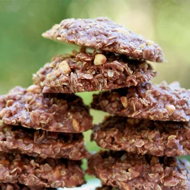

No Bake Cookies

Description
Tasty no-bake cookies made with oatmeal, peanut butter and cocoa. Start timing when mixture reaches a full rolling boil; this is the trick to successful cookies. If you boil too long the cookies will be dry and crumbly. If you don't boil long enough, the cookies won't form properly.
Ingredients
- 1¾ cups white sugar
- ½ cup milk
- ½ cup milk
- 4 tablespoons unsweetened cocoa powder
- ½ cup crunchy peanut butter
- 3 cups quick-cooking oats
- 1 teaspoon vanilla extract
Steps
- In a medium saucepan, combine sugar,milk, butter, and cocoa Bring it to a boil and cook for 1 1/2 minutes.
- Remove from head and stir in peanut butter, oats, and vanilla.
- Drop teaspoonfuls onto wax paper. Let cool until hardened.
Home Page